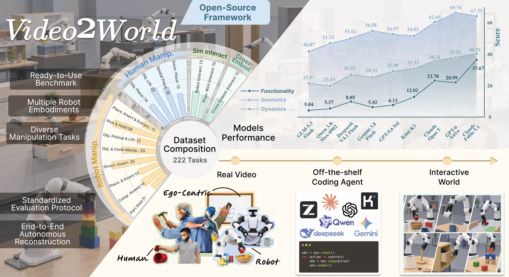
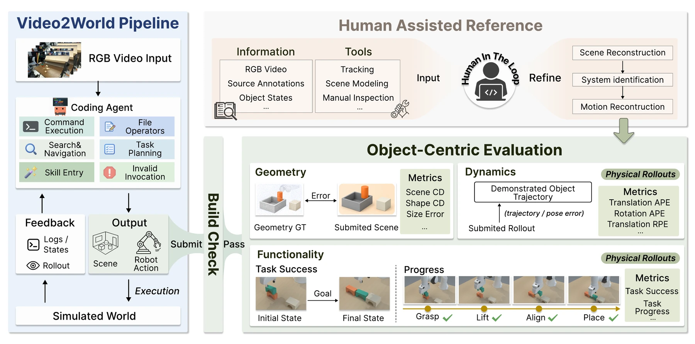

Video2World: Benchmarking Coding Agents for Interactive World Modeling from Embodied Videos
- PaperVideo2World: Benchmarking Coding Agents for Interactive World Modeling from Embodied Videos
- AuthorsJinzhou Tang, Zijun Zhang, Jing Yang, Yuchen Yan, Kun Zhou, Lingjun Mao, Ruobing Han, Jinglin Cao, Wenpeng Xu, Lukun He, Minghao Fu, Fan Feng, Biwei Huang
- FromAether AI, University of California, San Diego
- arXivarXiv:2610.04432 (cs.CV), October 2026
- LinksProject page · Code · Data
Interactive simulators built from real observations could scale up data for embodied AI, but today's real-to-sim pipelines still need much manual scene building and calibration. Video2World asks whether coding agents can do the whole job: watch an embodied video, build the simulated environment and the robot's behaviour, and refine both from execution feedback.


The task
Each instance pairs a video with a target: a simulator, a robot embodiment and its control interface. In a sandbox with the video, the simulator's APIs, documentation, assets and coding tools, the agent submits a program: the environment and the robot's behaviour. The evaluator then runs it, and after the scene is set up every change to an object must come from the simulator's dynamics, not from setting its state.
The data
222 instances in 39 task families, from 189 clips of robot executions, egocentric human recordings and third-person human demonstrations. They come from FurnitureBench, DROID, RoboDojo, HOI4D, HOT3D, DexYCB, OakInk2 and an in-house household dataset. Every video has object-centric annotations of the scene's geometry, the objects' motion and the task: its objects' roles, essential events, goal and milestones. For each target robot, a reference behaviour derived from the annotations is executed under contact physics to check that the task can be reproduced.


How it is scored
Build Rate says whether a submission runs. Geometric fidelity compares the reconstructed scene and objects with the annotations (scene and shape Chamfer distance, size, position, relative pose). Dynamic fidelity compares the objects' motion with the demonstration (translation and rotation errors). Functional correctness asks whether the task is done (Task Success) and how far it got (Task Progress, by milestones). V2WScore combines them into one score from 0 to 100, averaged over task families: a package that does not build scores 0.
What the paper found
The authors evaluate 9 coding-agent systems, one attempt per instance. Most reconstructions build, but Task Progress consistently exceeds Task Success: agents often carry out part of an interaction without finishing it. Task Success rises sharply from Claude Opus 5 on, from below 5% to over 15%. Worlds that look better can work worse: GPT-6 Astra leads in object shape and size, while Fable-5.1 does better on the scene and the task. A human-assisted reference leads every automatic metric and is preferred by human raters, yet does not complete every task either.
Run it in Real2SimLab
The ground truth and the reference packages never reach the agent, and the agent reaches only the model API.
r2s env build r2s-video2world r2s-agent-codex-video2world r2s bench build video2world --out tasks/v2w r2s eval --tasks tasks/v2w --method codex=codex:image=r2s-agent-codex-video2world --out runs/v2w
More in the documentation.